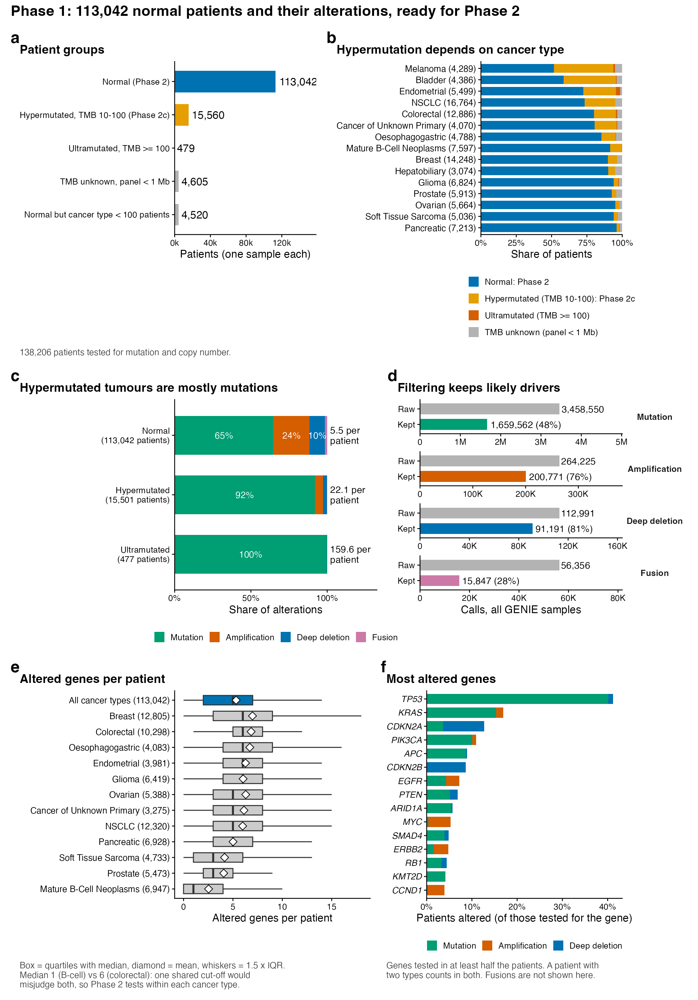
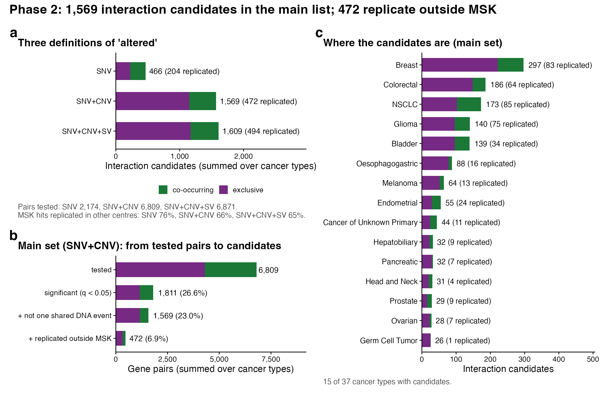
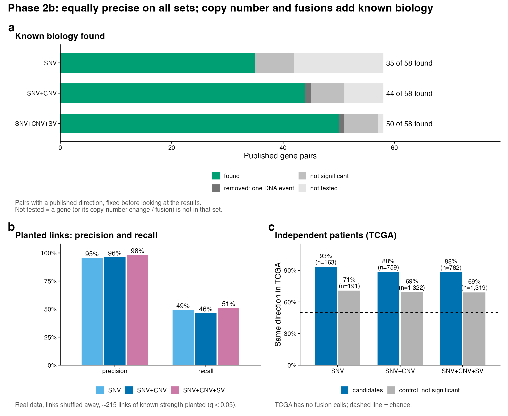
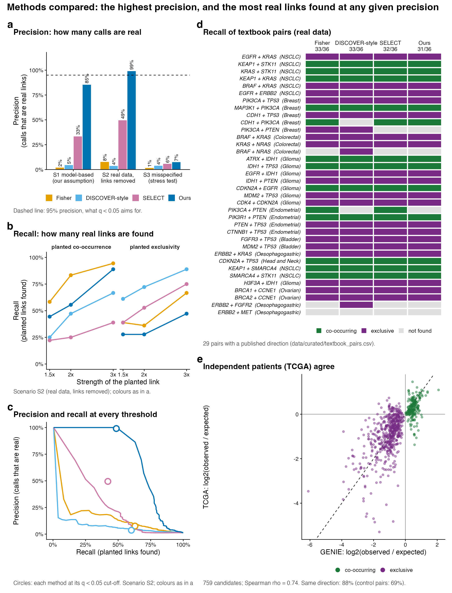
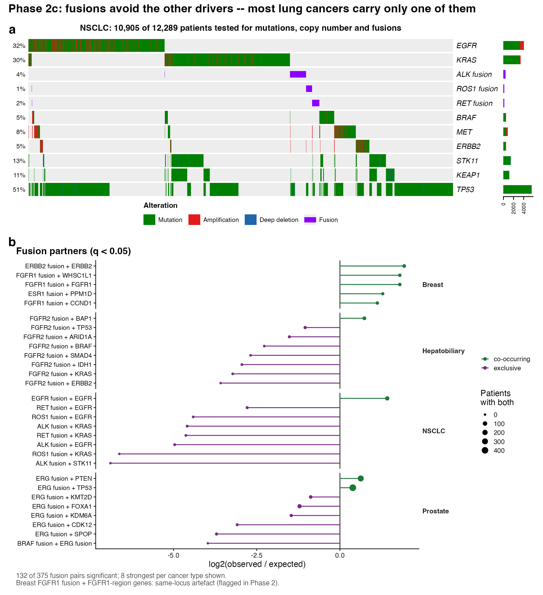
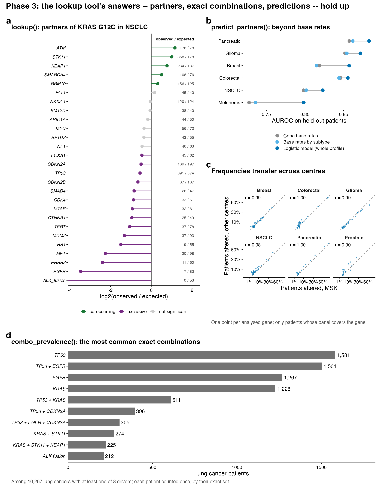
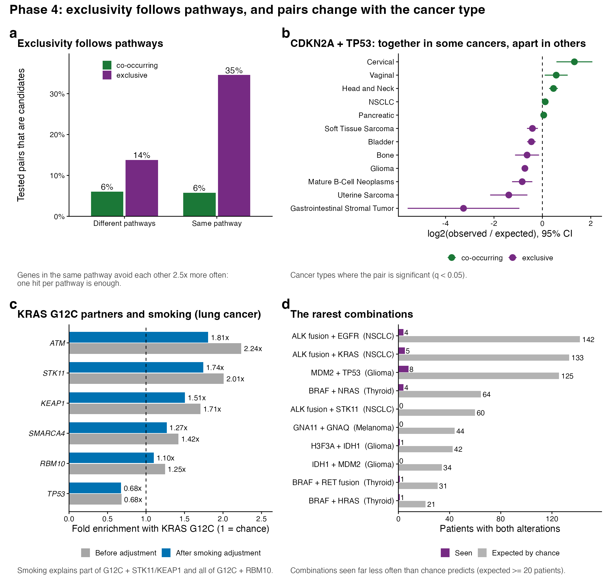

零基礎入門指南
哪些基因會一起出現在同一個腫瘤裡、哪些會互相迴避、我們怎樣用 GENIE 數據去量度,以及我們可以(和不可以)相信哪些結果 —— 不預設任何癌症基因組學背景。
在任何統計說得通之前,先要知道我們在數什麼、數據從哪裡來。
你的每個細胞都有一份完整的 DNA(去氧核糖核酸),可以想像成一本用四個字母 A、C、G、T 寫成的超長說明書。說明書被分成大約兩萬個段落,每個段落叫一個 gene(基因),通常負責製造一種蛋白質。蛋白質才是真正在細胞裡做事的東西:傳遞訊號、修補 DNA、決定細胞什麼時候分裂。
當說明書裡的字母被改寫,就叫 mutation(突變)。最簡單的一種是改一個字母(SNV,single nucleotide variant)。改了之後,蛋白質可能完全不受影響(silent),也可能少了一截、斷掉、或者永遠處於「開」的狀態。
突變分兩類來源。Germline(生殖系)突變是你從父母遺傳的,身體每個細胞都有;somatic(體細胞)突變是出生後在某個細胞裡才發生的,只存在於那個細胞及其後代。癌症幾乎全部來自 somatic 突變 —— 一個細胞累積了足夠多的「壞改變」,就開始不受控制地分裂。
但腫瘤裡的突變不是全都有用。研究者把它們分成兩種:
分辨這兩者是整個項目反覆出現的難題。本項目 Phase 1 的大部分工作,就是在盡量只留下「很可能是 driver」的改變。
一個基因可以用不同方式被改變。本項目把它們都算作這個基因「有 alteration」:
| 類型 | 是什麼 | 例子 |
|---|---|---|
| Mutation(突變) | 基因序列內的字母被改寫,而且會改變蛋白質 | KRAS G12C、TP53 截斷 |
| Copy number(拷貝數) | 整段 DNA 的份數改變。Amplification(擴增)=份數大增;deep deletion(深度缺失)=幾乎整個消失 | ERBB2 擴增、CDKN2A 缺失 |
| Fusion(融合基因) | 兩個本來分開的基因接在一起,造出一個異常的新蛋白 | ALK 融合(肺癌)、ERG 融合(前列腺癌) |
| 非編碼 driver | 不在蛋白質編碼區,但仍然啟動癌症的改變。本項目特別納入兩個 | TERT promoter(把 TERT 基因「開大聲」);MET exon 14 跳躍 |
為什麼要分清楚?因為不同類型的改變用不同儀器、不同演算法偵測,可信度也不同。後面你會看到,「只看突變」、「突變加拷貝數」、「再加融合基因」三種定義,會給出三份不同的結果清單。
醫院為病人做腫瘤基因檢測時,通常不會把整個基因組讀一遍,太貴也太慢。他們用的是 targeted panel(靶向 panel):只挑幾十到幾百個和癌症有關的基因來定序。GENIE 裡有 167 種不同的 panel,每個 panel 的基因數中位數是 105 個。
這一點是整個項目最重要的背景:不同病人被測的基因不一樣。如果某個病人的 panel 根本沒有包含 STK11,那他的記錄裡「沒有 STK11 突變」,意思其實是「沒有人看過」,而不是「看過了,是正常」。第 10 節會專門處理這個陷阱。
AACR Project GENIE 是一個由多間癌症中心(例如 MSK、DFCI 等)合作分享臨床定序數據的公開資料庫。本項目用的是 v19.0 版:
限制:GENIE 能做什麼、不能做什麼
GENIE 的主要版本沒有治療與療效數據,存活資料也很粗略(只有年份、只有部分中心)。所以本項目只能告訴你「哪些改變常一起出現」,不能預測「這個病人用某隻藥會不會有效」。GENIE 病人層面的資料也不能公開再分發,所以整個程式碼庫只保存匯總結果,不含任何個別病人的資料行。
這是整個項目的核心概念。對於兩個基因 A 和 B,在同一種癌症裡:
為什麼臨床上在意
一個病人如果帶著罕見的基因組合,醫生想知道:「這種組合常見嗎?還常常伴隨什麼別的改變?有沒有人研究過?」現在這類問題要靠人手去搜尋 GENIE。這個項目的目標之一,就是把這個查詢自動化(第 30 節)。
互斥通常被解讀為兩個基因做的是同一件事(重複了,第二個沒有額外好處);共現被解讀為兩者合作。但這只是常見的解釋,不是定論 —— 第 23 節會說明為什麼。
不同癌症的突變組合差異極大。如果把全部癌症混在一起算,你會得到的是「這是肺癌 vs 那是大腸癌」的差別,而不是基因之間的關係。所以項目一律在每一個癌種(cancer type)內分開分析。連同一癌種內部,也有更細的 subtype(亞型):例如乳癌分 lobular(CDH1)和 ductal(ERBB2),胰臟癌分腺癌和神經內分泌瘤。亞型的問題會在第 13、20 節再出現。
最後有 52 個癌種(各至少 100 位可用病人)進入主分析。
項目在 2026-09-24 和導師 Jason 討論後重新定位(取代原本「聚類加存活分析」的方案,見第 24 節):
登記的專題標題是 Learning Cancer Mutation Landscapes from Large-Scale Somatic Mutation Testing Data。
這些是初學者通常不會預先知道、但要看懂後面結果就必須掌握的東西。
TMB(tumour mutational burden,腫瘤突變負荷)是每百萬個鹼基(Mb)裡有多少個突變。大部分腫瘤只有幾個;但如果腫瘤的 DNA 修復系統壞了(例如 POLE 突變、微衛星不穩定),就會一口氣累積幾十甚至幾百個突變,這叫 hypermutation(超突變)。
這會嚴重誤導統計:一個帶著 200 個突變的腫瘤,「碰巧」同時帶有任意兩個基因的機會非常高,令幾乎所有基因對都看起來像「共現」。所以項目規定:
| 分組 | 規則 | 病人數 |
|---|---|---|
| Normal(主分析) | TMB < 10,且 panel 覆蓋 ≥ 1 Mb | 113,042 |
| Hypermutated | TMB 10–100 | 15,560 |
| Ultramutated | TMB ≥ 100(主要是 POLE) | 479 |
| TMB unknown | panel < 1 Mb,無法可靠量度 | 4,605 |
為什麼 panel 要 ≥ 1 Mb?小 panel 只覆蓋幾個熱點,TMB 只是在數那幾個預先選好的突變 —— 在小 panel 上有 61% 的樣本會被算成「TMB ≥ 10」,那只是雜訊。(數字為樣本層面:28,602 超突變、195,065 非超突變、48,170 未知。)
主分析只用 Normal 病人;超突變腫瘤另外單獨描述(第 29、31 節)。這個設計是導師 Prof. Wong 的建議,後面會看到數據支持它。
這是整個項目最核心的一課。想像三位病人和三個基因:
| 病人 | Panel | KRAS | STK11 | EGFR |
|---|---|---|---|---|
| 甲 | 大 panel | 突變 | 正常 | 正常 |
| 乙 | 小 panel(沒有 STK11) | 突變 | 沒有測 | 正常 |
| 丙 | 大 panel | 正常 | 突變 | 正常 |
如果把乙的 STK11 當成「正常」,就等於把一個根本沒人看過的病人算進分母,所有頻率都會偏向最常見的 panel。所以 Phase 1 要為每一個 panel、每一個基因、每一種改變類型(突變/拷貝數/融合)記錄「有沒有測」,只有測過的才計入。
值得知道:官方 panel 資料是錯的
最直接的做法是讀 GENIE 提供的 panel 說明文件。我們檢查後發現它在三方面都不可靠,所以改為從數據本身推斷「這個 panel 實際上釋出了什麼」:
修正後有些頻率大約加倍:例如膠質瘤的 CDKN2A 缺失由 17.4% 變成 34.4%,和文獻的約 30–40% 相符。
原始數據有 3,458,550 個突變紀錄,大部分不是 driver。Phase 1 用這幾條規則篩選(最後保留 1,659,562 個,48%):
值得知道:一個被修正的門檻
早期把 gnomAD 門檻設成更嚴的 1e-4,結果誤把真正的 driver 一併剔除 —— 例如 JAK2 V617F 因為在血液克隆增生的健康人身上也看得到,被砍掉 90% 的紀錄。門檻放寬到 1e-3 後修正。
限制
missense 規則是和導師一起從五個候選規則中選出的「合理、暫時可用」的選項,不是最優化的結果。AlphaMissense 與 PolyPhen/SIFT 常常意見不一(AlphaMissense 把早期規則保留的突變中約 31% 判為良性);要求兩者同時成立會令一百多個基因完全沒有 missense 證據,所以才選了「或」的寬鬆版本。
拷貝數和融合同樣要篩:只留深度的 +2/−2 呼叫,並且要符合基因的角色(抑癌基因被缺失、致癌基因被擴增才算,方向相反的多半是路過的乘客);融合只留兩個不同基因連接、不是反義、且是已發表過的配對(Mitelman 資料庫)或涉及已知的反覆融合致癌基因。結果:拷貝數 377,216 → 291,962;融合 56,356 → 15,847。
要判斷 A 和 B「是否比隨機更常一起出現」,先要知道「隨機會有多常」。假設在 1,000 位肺癌病人中,A 有 200 人(20%)、B 有 100 人(10%)。如果兩者互不相干,預期同時有 A 和 B 的人數是:
實際數到 40 人,就是期望的 2 倍(fold enrichment = 2);只有 5 人,就是 0.25 倍。比 1 大是 co-occurrence,比 1 小是 exclusivity。
要判斷這個差距是不是「偶然」,傳統做法是 Fisher's exact test(費雪精確檢定) —— cBioPortal 和 maftools 等常用工具都在用它。但 Fisher 有一個隱藏假設:每位病人帶有任何改變的機會都一樣。現實不是這樣:一個帶著 30 個改變的腫瘤和一個只帶 2 個的,完全不同。
這是項目 Phase 2 採用的檢定。它的想法很直觀:
一句話版本
對每一位病人問:「既然這個人總共有 r 個改變,那這兩個基因剛好都在其中的機率是多少?」把所有病人的機率加起來,就得到「隨機預期的同時出現人數」,再跟實際人數比較。改變很多的病人自然「預期」較高,所以不會再把忙碌的腫瘤誤當成基因之間的關係。
技術上,它是 Rasch 模型的條件似然(Andersen 1970):每個病人和每個基因各有一個參數,以病人的改變總數作條件,就能精確消去病人參數,剩下每個基因的「odds」。我們另外加了兩個重要的改進:
我們一次測試了 6,809 個基因對。如果每個用 p < 0.05 作標準,即使全部都沒有真的關係,也會有約 5%(340 個左右)碰巧通過。這叫 multiple testing(多重檢定)問題。
解法是 FDR(false discovery rate,錯誤發現率),用 Benjamini-Hochberg 方法換算成 q-value。q < 0.05 的意思是:「在我們宣稱顯著的結果裡,預期最多約 5% 是假的」。本項目每個癌種各自作為一個檢定家族做 FDR。
敏感度測試:改為把所有癌種合在一個家族做 FDR,顯著的數量由 4,657 變成 4,421,97.9% 的判定一致,所以這個選擇對結論影響很小。
兩個基因同時出現,未必是「兩個事件」。最常見的假象是一次拷貝數事件同時打中兩個基因:染色體上相鄰的基因常在同一段 amplicon(擴增片段)裡一起被複製或一起被刪除。例如 CDKN2A 和 CDKN2B 在 9p21 緊貼在一起,一次缺失兩個都沒了。這樣的「共現」只是同一件事被數了兩次。
Phase 2 的處理規則:
一個發現如果在換一批病人後消失,就不可信。本項目有兩層驗證:
評估一份清單的好壞,只用兩個詞,而且兩個同樣重要:
問題是在真實數據上,沒人知道所有真的關係是什麼。所以我們用模擬:把真實數據在亞型內洗牌(每個病人保持自己的改變數、每個基因保持自己的頻率,但所有基因之間的關係被打散),再人為植入約 215 條已知強度(1.5 倍到 3 倍)的關係,看方法找回多少(recall),以及它喊出的東西有多少是真的(precision)。在洗牌後、沒有植入的數據上,任何被喊出的配對都是錯的,可直接量到「假警報率」。
限制:模擬永遠只是模擬
模擬的好壞取決於它多像真實。我們設了三個情境:S1 完全符合我們檢定的假設(最有利);S2 用真實數據洗牌(最貼近現實);S3 故意加入一個檢定「看不到」的隱藏病人群組(壓力測試)。結果在第 27、28 節,S3 把包括我們在內的所有方法都打敗了。
這一部分只講實際在這份數據上「咬到我們」的統計陷阱,不是教科書式的清單。
一個基因對通過了 q < 0.05,只代表「這個規律不太可能是巧合」。它沒有說「這兩個基因互相影響」。至少有三種完全真實、可重複、但和基因交互無關的原因,可以製造同樣的規律:
所以這個項目的結果是一個「漏斗」,每一步都在剔除一類假象。主清單(突變+拷貝數)的數字:
| 步驟 | 基因對數 | 佔測試總數 | 共現 | 互斥 |
|---|---|---|---|---|
| 已測試 | 6,809 | 100% | 2,498 | 4,311 |
| 顯著(q < 0.05) | 1,811 | 26.6% | 654 | 1,157 |
| + 不是同一個 DNA 事件 | 1,569 | 23.0% | 419 | 1,150 |
| + 在 MSK 以外的中心重複 | 472 | 6.9% | 133 | 339 |
注意最後一步的讀法:replication 是「在 MSK 顯著、再拿去其他中心重測」。1,569 個候選中,只有 716 個能這樣被重測(其餘 853 個不是在 MSK 單獨顯著,就是其他中心沒有足夠病人/panel 去測),這 716 個裡面有 472 個(66%)重複成功,沒有任何一個方向相反。所以 472 不是「其餘 1,097 個都是假的」,而是「只有這 472 個有獨立證據支持」;引用任何單一配對時,「是否 replicated」要和 q 值一起報告。
Pseudoreplication(偽重複)指把本質上是同一件事的資料點當成多個獨立證據。在這個項目裡它以三種形式出現:
把不同的亞群混在一起計算,會製造出「在每個亞群裡都不存在」的關係,這叫 Simpson's paradox(辛普森悖論)的一種。我們在這份數據上遇到的實例:
| 例子 | 混合時 | 分亞型後 |
|---|---|---|
| 胰臟:MEN1 vs SMAD4 | 強烈互斥(q = 6e-22) | 只是神經內分泌瘤 vs 腺癌,兩種不同的病 |
| 肺癌:KMT2D 突變 + PIK3CA 擴增 | OR 7.0 | OR 1.7。鱗狀癌只佔病人 9.8%,卻貢獻 86% 的共現 |
| 肉瘤:RB1 缺失 + TP53 突變 | OR 4.2 | OR 1.4。平滑肌肉瘤佔 13.5%,貢獻 57.5% |
| 膠質瘤:MTAP 缺失 + PTEN 突變 | OR 1.9 | OR 1.1。膠質母細胞瘤貢獻 75% |
辨認這類情況的特徵是:一個亞型佔病人的少數,卻貢獻大部分「共現」的病人。
超突變腫瘤是另一種 pooling:大腸癌裡超突變專屬的訊號,主要是錯配修復(MMR)標的基因(RNF43、KMT2D、ARID1A、MSH3)和染色體不穩定的 driver(TP53、APC、KRAS)互相迴避。那是兩種腫瘤亞型(MSI 與超突變 MSS)剛好共用同一段 TMB 範圍,不是基因交互 —— 這就是超突變組只作描述、不納入交互候選的原因。
限制:亞型標籤本身不完美
GENIE 各中心對同一種亞型的命名不同(例如 "Glioblastoma" 與 "Glioblastoma Multiforme"),亞型分層是用這些標籤做的。這個問題尚未解決,是給導師的待決事項之一(第 35 節)。另外 GENIE 沒有分子分型標籤(例如子宮內膜癌的 POLE / MMRd / p53abn / NSMP),所以有些結果可能仍混著未被捕捉的亞群。
Confounding(混淆)是指一個沒被考慮的第三個因素,同時影響兩個基因。本項目遇到三個:
van de Haar 等(2019)指出,主要在低突變負荷腫瘤裡出現的基因,會累積假的互斥,他們測試的所有方法中,基因的「負荷關聯」(MLA)和其顯著互斥配對數都強烈負相關(r = −0.60 至 −0.87)。我們在 GENIE panel 數據上重做這個診斷:沒有看到這麼強的混淆;但把超突變腫瘤放回去後,出現了較弱的版本,而且我們的檢定和 Fisher 一樣受影響 —— 所以檢定本身不能解決它。把超突變腫瘤分開後,所有方法的混淆都消失。這是「主分析排除超突變腫瘤」這個決定的直接證據。
有些基因幾乎只會作為擴增片段上的乘客被改變。這種基因被改變的病人,通常整個基因組都不穩定,在別處也有一堆擴增,看起來就像「共現」。TP53 突變的腫瘤平均帶有約 2 倍的深度拷貝數改變(子宮內膜癌 57% 對 11%;膠質瘤是例外,因為 IDH 野生型膠質母細胞瘤拷貝數多、TP53 少)。
注意:校正 burden 有副作用
burden 本身有一部分是被測試的基因造成的:TP53 失效會導致不穩定,所以按不穩定程度分層,等於把 TP53 的效應也扣掉了(校正中介變數)。這是我們的假設,沒有測試過。因此校正後的數字只能當作保守下限,不是真相。把 burden 直接放進主檢定也試過,結果過度校正(已知的乳癌 CCND1/FGFR1 共擴增消失了),所以 burden 只作為敏感度標記(burden_robust)。1,569 個候選中 1,264 個通過。
KRAS G12C 是 C>A 替換,正是煙草的突變特徵;STK11、KEAP1 突變也和吸煙有關。所以「G12C 常和 STK11/KEAP1 一起」可能部分只是「兩者都是吸煙的後果」。我們用每位病人自己的突變譜估算吸煙特徵(C>A 比例,排除被測試的基因),再分層重測:
| KRAS G12C 的伙伴 | 校正前 | 校正後 | 結論 |
|---|---|---|---|
| STK11 | 2.01× | 1.74× | 縮小但仍然很強,約 1/5(對數尺度)是共同的吸煙 |
| KEAP1 | 1.71× | 1.51× | 同上 |
| RBM10 | 1.25× | 1.10× | 不再顯著(q = 0.33):完全由吸煙解釋 |
陰性對照:非吸煙型的 G12D 校正前後幾乎不變(STK11 1.43× → 1.42×),正好是預期的結果。
限制
GENIE 沒有吸煙史,吸煙程度是從 panel 上的突變譜推斷的代理指標。
Power(檢定力)是「真的有關係時,能偵測到的機會」。樣本越少、基因越罕見,power 越低。這帶來三個後果,都影響臨床上最關心的情況:
怎樣區分「沒有」和「沒測到」
一個基因對在我們的結果裡「不顯著」,有三種可能:真的沒有關係、有關係但太弱、或樣本不夠。結果表要和「not tested」(沒資格被測)分開報告,不能混為一談。第 27 節的「已知配對找到沒有」表就是這樣區分的。
在這份數據上,兩個方向的結果穩健程度不同(來自第 32 節引用的信任檢查):
| 互斥(exclusive) | 共現(co-occurring) | |
|---|---|---|
| 分亞型後完整保留 | 80% | 62% |
| 方向反轉 | 4 / 374 | 2 / 313 |
| 校正 burden 後損失的對數 OR(中位數) | 11.5% | 23% |
另外,互斥明顯集中在同一條信號通路內(同通路 35% 是互斥候選,不同通路 14%),但共現則沒有集中在不同通路之間(兩者都是 6%)。這和「互斥 = 重複功能,共現 = 不同通路合作」的教科書說法只對了一半。
限制:截面數據分不開兩種解釋
互斥可以是「功能重複」(第二個命中沒有額外好處),也可以是 synthetic lethality(合成致死)(同時有兩個反而殺死細胞)。只看一個時間點的截面數據,無法區分這兩者。所以任何一對互斥的生物學解釋,都只是假說。
按順序講實際做過的事,包括走錯的路。所有數字取自 notebook 與 data/processed/ 的輸出,圖片取自 results/figures/。
這個項目不是一條直線。把 git 歷史排出來,方法是被數據一步一步逼出來的:
| 日期(2026) | 發生什麼 |
|---|---|
| 9 月初 | Phase 1 開始從數據讀拷貝數的 testability;加入 OncoKB 的拷貝數 driver 篩選。 |
| 9 月 22 日 | 第一版用 Fisher 檢定,72.3% 的基因對顯著(其中 94% 是共現)—— Prof. Wong 說「一半顯著聽起來太高」是對的。改為 DISCOVER-style 的 rate-adjusted 檢定。 |
| 9 月 24 日 | DISCOVER-style 在無關係的數據上也大量喊出「互斥」(第 28 節),再改為 conditional test;同日改為每位病人一個樣本。同日和導師討論後重新定位:原本的「聚類 + 存活分析」方案被取代(GENIE 的存活資料太粗略),原本的 PLAN.md 後來被刪除,改為做查詢工具。 |
| 10 月 3–4 日 | 讀完文獻後重做 Phase 2(v3);Phase 3 查詢工具 v2、Phase 4 的生物學分析。 |
| 10 月 6 日 | 發現 amplifier-burden 混淆,並對所有拷貝數驅動的共現候選做系統性重測(第 32 節)。 |
| 10 月 23 日 | 加入融合基因、burden 敏感度標記、TCGA 驗證、方法比較。 |
| 10 月 25–26 日 | 新穎性篩查,並和 SelectSim 圖譜逐對比較;重新實作 SELECT,並更正我們對 van de Haar 2019 與 Scharpf 2022 兩篇文獻的敘述(commit 738b880)。 |
| 10 月 29–30 日 | Phase 1 重構(加入 TERT promoter、MET exon 14、改用外部資料定義融合);Phase 2 改為同時建三份清單;Phase 2b 改用 precision 與 recall 評估;「weak-effect」旗標被移除。 |
值得知道:被放棄的路
Phase 1 的任務是把原始 GENIE 檔案變成三張乾淨的表,讓 Phase 2 只需要做統計決定:
| 表 | 每一行是 | 內容 |
|---|---|---|
cohort | 一位病人(一個樣本) | 癌種、panel、中心、測過什麼、TMB 與 TMB 分組 |
events | 一個 driver 事件 | 突變、深度拷貝數、driver 融合 |
testability | panel × 基因/特徵 | 有沒有測突變、拷貝數、融合(讀自數據) |
每張表寫出前,程式還會檢查:每位病人一行、每個事件都屬於 cohort 裡的病人、每個事件在該病人的 panel 上確實可被測到。

值得知道:Phase 1 裡被修正的錯誤
Phase 1 的限制(原樣寫在 notebook 的 Limitations)
流程(每一步的理由見第二部分):
整個流程對三種「改變」的定義各跑一遍,用同樣的病人,所以差別只來自「什麼算改變」:
| SNV | SNV+CNV(主清單) | SNV+CNV+SV | |
|---|---|---|---|
| 癌種數 | 49 | 52 | 52 |
| 已測試基因對 | 2,174 | 6,809 | 6,871 |
| 互動候選 | 466 | 1,569 | 1,609 |
| 其中共現 / 互斥 | 239 / 227 | 419 / 1,150 | 436 / 1,173 |
| 在其他中心重複 | 204 | 472 | 494 |
| MSK 顯著配對的重複率 | 75.8% | 65.5% | 65.4% |

限制
用三種方法評估三份清單,而且評估標準是先定好的:
58 個基因對(15 個共現、43 個互斥,每個有文獻與 DOI/PMID),涵蓋 17 個癌種,在看結果之前就選好。「找到」= 該清單把它列為候選,而且方向和文獻一致。找到的數量:SNV 35 個、SNV+CNV 44 個、SNV+CNV+SV 50 個,沒有任何一個清單找到方向相反的配對。
主清單(SNV+CNV)沒找到的 14 個,原因分得很清楚:
| 原因 | 數量 | 配對 |
|---|---|---|
| Not tested(這個清單根本看不到) | 7 | ALK 融合 vs EGFR、KRAS(肺);ERG 融合 vs FOXA1、SPOP(前列腺);BRAF、HRAS、NRAS vs RET 融合(甲狀腺)—— 都需要融合資料,所以加入融合的清單找到其中 6 個(HRAS vs RET 融合仍然測不到) |
| Tested but not significant | 6 | BRAF vs NRAS(大腸)、PIK3CA + PTEN(子宮內膜)、ERBB2 vs MET(食道胃)、ATRX vs CIC(膠質瘤)、RHOA + TET2、SF3B1 vs SRSF2 |
| 被「同一個 DNA 事件」規則移除 | 1 | KIT vs PDGFRA(GIST):只看突變時找得到,但兩個基因同在 4q12,加入拷貝數後被當成同一個擴增而移除 |
這是我們方法的真實代價,不是巧合
「KIT vs PDGFRA 被誤殺」說明鄰居規則會傷到真的生物學;「tested but not significant」的 6 個是嚴格檢定的 recall 代價。這些在文獻中成立的配對,清單裡就是沒有。
用每個清單自己的數據,洗牌後植入約 215 條已知強度的關係(6 次重複):
| SNV | SNV+CNV(主) | SNV+CNV+SV | |
|---|---|---|---|
| Precision | 95% | 96% | 98% |
| Recall | 49% | 46% | 51% |
| 已知配對找到(共 58) | 35 | 44 | 50 |
| TCGA 方向一致(對照組) | 93%(71%) | 88%(69%) | 88%(69%) |
| TCGA 顯著但方向相反 | 0 | 0 | 0 |
候選配對在 TCGA(全外顯子、其他中心、非超突變病人)中保持方向的比例,遠高於對照配對(GENIE 裡不顯著的配對)。TCGA 沒有融合呼叫,所以融合配對無法在那裡驗證。

限制與讀法
結論:主清單用 SNV+CNV —— precision 不輸給其他清單,而且看得到拷貝數的生物學。融合版本找到最多已知生物學、precision 不減,但暫時保持獨立,等導師決定。
在完全相同的數據(9 個大癌種、突變加拷貝數)上跑四種方法,用兩種標準:沒有真實關係的數據上喊出多少(假警報),以及植入關係時找到多少(recall)。
| 方法 | p < 0.05 的比例(應為 5%) | FDR 後仍顯著 |
|---|---|---|
| Fisher(cBioPortal 用的) | 11% | — |
| DISCOVER-style | 33% | 19% |
| Conditional test(我們的) | 2% | 0% |
DISCOVER-style 為什麼出錯?它用每位病人自己的改變數去擬合他的機率,擬合到剛好重現這位病人的總數。一位只有 2 個改變的病人,模型便剛好「預期」有約 2 個共同出現的配對,但實際上只可能有 1 個。幾萬位病人加起來,預期的共現就系統性偏高,於是配對在統計上看起來偶然地互斥 —— 所有假警報全部是「互斥」。已發表的 Rediscover 套件結構相同,在模擬無交互的 MSK-IMPACT468 數據上 69.4% 的配對 p < 0.05(990 個中有 598 個在 FDR 後顯著),我們的檢定是 2.9%、FDR 後 0%。
值得知道:我們確認自己沒有寫錯程式
因為「我們的檢定比已發表的套件好」是個大聲稱,所以先檢查實作:Poisson-Binomial 的尾端機率和 Rediscover 在同一組機率上,990 個配對判定完全一致;和 scipy 的二項尾端及 60 位精度的 mpmath 比較,最大相對誤差 1e-12;和 R 的 PoissonBinomial::ppbinom 在 p 低至 1e-124 時有 7 位有效數字相同。也就是說,差別在模型的假設,不在程式 bug。
| 情境 | 方法 | Precision | Recall |
|---|---|---|---|
| S1 符合我們的假設 | Fisher | 2% | 66% |
| DISCOVER-style | 5% | 65% | |
| SELECT | 33% | 62% | |
| Ours | 85% | 51% | |
| S2 真實數據洗牌(最貼近現實) | Fisher | 8% | 63% |
| DISCOVER-style | 4% | 60% | |
| SELECT | 49% | 42% | |
| Ours | 99% | 49% | |
| S3 隱藏的病人群組(壓力測試) | Fisher | 1% | 70% |
| DISCOVER-style | 4% | 77% | |
| SELECT | 6% | 68% | |
| Ours | 7% | 75% |

這個比較不利的地方,必須寫出來
融合基因在 GENIE 裡大多太罕見,通不過「基因 ≥ 3%」的門檻,但它們恰恰是臨床最常問的(「一個 ALK 融合的肺癌,通常還伴隨什麼?」)。所以另外做了「融合篩查」:每個融合在某癌種有足夠的攜帶者,就用同樣的條件檢定,對該癌種的分析基因和其他融合逐一測試。375 個融合配對中,132 個顯著。

限制
圖 b 中乳癌的 FGFR1 融合 + FGFR1 區域基因(WHSC1L1、CCND1)是同一個位點的假象,已在 Phase 2 標記。融合只能在「panel 有釋出融合資料」的病人身上測試。
Phase 2c 還包括 burden 敏感度標記(第 21 節)、mutation-load 診斷(第 21 節)與方法在真實數據上的比較(圖 4e)。這些都沒有改變主清單的 1,569 個候選。
這是 Aim 1。一位醫生遇到一位肺癌病人帶 KRAS G12C,想問幾個問題。工具提供五個函數:
| 問題 | 函數 | 怎樣回答 |
|---|---|---|
| 通常還有什麼一起改變? | lookup() | 在 panel 感知下,數「攜帶者」與「非攜帶者」中伙伴基因的頻率,按 TMB 分組,並附上 Phase 2 的判定 |
| 這個確切組合有多常見? | combo_prevalence() | 在「所有基因都測過」的病人中直接計數,附 95% 信賴區間 |
| 這個(罕見)配對是不是真的偏多/偏少? | test_pair() | 對任意兩個特徵、包括變異層級和 Phase 2 門檻以下的配對,即時跑同一個條件檢定 |
| 以整個病人的資料,還可能有什麼? | predict_partners() | 每個基因一個正則化 logistic 模型 |
| 對治療意味著什麼? | therapy_evidence() | 查 CIViC 開放知識庫(含組合證據) |
例子:肺癌 KRAS G12C 的伙伴。STK11 在 G12C 攜帶者中有 358 位,隨機預期 178 位;KEAP1 234 對 137;ATM 176 對 78;反過來 ALK 融合是 0 對 53,EGFR 是 7 對 83。這和文獻一致(Skoulidis & Heymach 2019:約 25% 的 G12C 肺癌帶 STK11、約 20% 帶 KEAP1)。
一個罕見組合的例子:黑色素瘤中 BRAF V600E 與 NRAS 突變強烈互斥 —— 在 2,220 位非超突變病人中只有 6 位同時攜帶,隨機預期約 163 位(約 27 倍稀少);CIViC 有組合層級的證據(level B,對 BRAF 抑制劑 dabrafenib/vemurafenib 的 resistance,Shi et al. 2014)。

值得知道:相似病人配對失敗了
登記的 Aim 2 原本寫「把新病人配對到基因型相似的病例」。我們比較了四種做法(隱藏病人一個真實的改變,看方法能否把它排在前面,AUROC):
| 方法 | AUROC |
|---|---|
| 只用癌種內的基因頻率(完全沒用病人資料) | 0.82–0.83 |
| 最近鄰居(Jaccard / 加權 / 加同亞型) | 0.81–0.82 |
| 把兩兩共現比值相加 | 0.77 |
| 每個基因一個 logistic 模型(其他改變 + 改變負荷 + 亞型) | 0.855 |
相似病人配對不比單純用基因頻率好:panel 上每位病人只有 2–4 個改變,最近鄰居太吵;而兩兩共現比值被改變多的腫瘤誇大(和 Fisher 同樣的陷阱)。能打敗基礎比率的是同時看所有已知改變和改變負荷的模型。所以工具的做法是:完全相同的組合用 combo_prevalence() 報告,不再嘗試「相似度」。
限制
Aim 2:每一節都從文獻取一個說法,在 GENIE 上檢驗。

限制
在 135 個 replicated 的共現候選中,25 個(19%)幾乎完全(≥ 80%)由「兩個基因都是拷貝數改變」驅動,正是容易被 burden 誤導的類型。對這 25 個個別重測(加入每位病人「其他基因的拷貝數改變數」作共變量):21 個通過,4 個是純混淆:
| 配對 | 癌種 | 原本 | 校正後 |
|---|---|---|---|
| BCL2L1 + MYC | 大腸癌 | 共現 1.74 倍 | 消失(OR 1.04,p = 0.76) |
| CCND1 + CDKN2A | 膀胱癌 | 1.44 倍 | 消失(OR 1.05,p = 0.71) |
| CDK4 + TERT | 肺癌 | 1.68 倍 | 減弱至邊緣(OR 1.34,p = 0.06) |
| FOXA1 + TERT | 肺癌 | 1.79 倍 | 消失(OR 0.81,p = 0.20) |
CD79B 是 B 細胞受體基因,和乳癌沒有已知關係,卻被 Phase 2 標為和 MDM2、AURKA、GNAS 共現(三者 q < 1e-5,全部在其他中心重複)。原因:它 96% 是擴增,位於 17q23,緊貼著乳癌的真實擴增區 PPM1D/TBX2,而 GENIE panel 幾乎不測這兩個基因的拷貝數(乳癌病人 0%),所以 CD79B 成了這個擴增區唯一看得見的標記。CD79B 擴增的病人中位數帶有 7 個其他擴增基因,一般乳癌病人是 2 個。
值得知道:一個被更正的錯誤
早期的檢查把 CD79B 和 GATA3(Phase 2 最強的 CD79B 配對,q = 2.5e-42)比較「GATA3 擴增」,發現關聯在校正 burden 後反轉。後來發現這個比較是錯的 ——GATA3 在乳癌幾乎全是突變(只有 4.6% 的共同改變病人是兩者都是拷貝數,95% 是「混合」:CD79B 擴增而 GATA3 是突變),拿擴增去比,問的是另一個、更窄的問題。所以那個反轉沒有告訴我們任何可靠的東西,並已從系統性重測中排除,因為它不是拷貝數驅動的配對,需要另一種(混合機制)檢查。
另一方面,校正 burden 後 CD79B 和 MDM2、AURKA、GNAS 的關聯仍然成立 —— 這指向一個更具體的模式:12q15(MDM2)、20q13(AURKA+GNAS)、17q23(CD79B)在一部分高度重排的腫瘤中一起被擴增,超過一般不穩定性可預期的程度。但這是解釋,不是證明。
讀這一節前請注意
notebook 05 是在「v3 重設計後的 Phase 2 輸出」上跑的(10 月 24 日),統計的是跨機制(一個基因突變、另一個基因拷貝數)的 687 個顯著檢定,基數和最後的主清單(1,811 個顯著、1,569 個候選)不同,所以下面的百分比只拿來看方向與量級,不要和上面的清單數字直接相加相減。
這些檢查本身的洞
第 31 節大部分是在驗證文獻裡的說法,所以結果多數是「確認已知生物學」。為了找真正沒被報告過的,我們把 387 個「強」候選(在其他中心重複、burden 穩健、非弱效應)逐一檢查:
結果:41 個在文獻與 SelectSim 都找不到,逐個看:
通過上述篩選的候選再用 logistic 回歸做壓力測試(校正亞型、第三個基因、burden、TMB,並限制 TMB < 5,因為 CTCF 是微衛星不穩定的已知標的,可能藏在 TMB 10 門檻之下):
| 配對 | 結論 |
|---|---|
| KRAS vs RARA(食道胃) | 被 ERBB2 解釋(RARA 搭 ERBB2 擴增) |
| MDM2 vs SMARCA4(肺) | 被第三個基因解釋(MDM2 擴增的腫瘤是 TP53 野生型) |
| BCL2L1 vs SMAD4(大腸) | 被拷貝數 burden 解釋 |
| CCNE1 vs CTNNB1(子宮內膜) | 被 TP53 / 分子分型解釋 |
| CTCF + PIK3R1(子宮內膜) | 被 TMB 削弱,TMB < 5 時不顯著 → 很可能是殘餘的微衛星不穩定 |
| CDKN2B vs H3F3A(膠質瘤) | 穩健(OR 0.12),但已知:H3 突變膠質瘤很少有 CDKN2A 缺失 |
| CTCF vs TP53(子宮內膜) | 穩健(校正後 OR 0.34,p = 3e-4;TCGA 方向相同;dN/dS 路徑一致),但已被 SelectSim 的補充圖譜報告 |
誠實的結論:沒有找到未被報告的 driver 層級配對
我們的最佳候選 CTCF vs TP53 其實在 SelectSim 的圖譜裡,只是不在任何論文的標題或摘要中。我們的貢獻是獨立確認,並在更嚴格的調整下依然成立(在亞型內、校正 PI3K 通路狀態、burden 與 TMB 之後,以及透過沉默突變的路徑)。我們每一個「穩健」配對,只要 SelectSim 報告了同一癌種的同一對,方向全部一致(0 個相反) —— 不同團隊、不同方法、不同的 GENIE 版本得到同樣的方向。
在「常見癌症裡由突變驅動的 driver 配對」這個層面,景觀接近飽和。我們真正不同的貢獻在別處:拷貝數與融合的伙伴(SelectSim 只含突變:49 個拷貝數配對中有 44 個、175 個混合配對中有 154 個不在它的範圍內)、對 panel 感知的統計、把乘客與 driver 分開的假象審核、確切的罕見組合計數,以及臨床工具。
限制
| 找到了(有證據) | 沒找到 / 沒做到 / 結果是負面的 |
|---|---|
| conditional test 在無關係數據上假警報 2%(0% 經 FDR),Fisher 11%、DISCOVER-style 33% | 我們的檢定不是全面最好:教科書配對 36 個中找到 31 個,Fisher 和 DISCOVER-style 各 33 個;SELECT 排序最強配對更好 |
| 主清單 6,809 個基因對 → 1,569 個候選(419 共現、1,150 互斥)→ 472 個在其他中心重複,0 個方向相反 | 只有 716 個候選能在其他中心重測,其餘 853 個沒有獨立證據 |
| 58 個文獻配對中找到 44(加融合 50);沒有任何配對方向相反 | 14 個沒找到,包括被鄰居規則誤殺的 KIT/PDGFRA,和 6 個測了但不顯著的 |
| TCGA 方向一致 88%(對照 69%),0 個顯著相反,Spearman 0.74 | Recall 只有約 46–51%;互斥的弱關係常被漏掉 |
| 互斥集中在同一通路(35% 對 14%);約三分之一的互動隨癌種改變,部分反向 | 共現沒有集中在不同通路之間;無法區分功能重複與合成致死 |
| 吸煙解釋約 1/5 的 KRAS G12C–STK11 關聯和全部的 G12C–RBM10 | 吸煙是從突變譜推斷的代理指標 |
| 融合伙伴:ALK/ROS1/RET 避開 EGFR/KRAS;ALK + STK11 預期 60 人實際 0 | 融合只能在釋出融合資料的 panel 上測試;TCGA 無法驗證 |
| 查詢工具的頻率跨中心一致(r = 0.90–1.00);logistic 模型勝過基礎比率 | 相似病人配對失敗(不比基礎比率好);工具不能預測療效;沒有網頁介面 |
| 25 個拷貝數驅動的共現候選中識別出 4 個純 burden 混淆 | 同機制(SNV-SNV、CNV-CNV)配對沒有同樣檢查;CD79B 規則漏網未解決 |
| 所有 387 個強配對都查過文獻與 SelectSim,方向全部一致 | 沒有找到未被報告的 driver 層級配對;最佳候選 CTCF vs TP53 已在 SelectSim 圖譜中 |
| — | 超突變腫瘤沒有帶來新的基因交互,主要是亞型結構 |
| — | 有 4 個共現配對在資料表中仍標為「to check / 尚未有機制解釋」:肺癌 BRAF+SETD2、CTNNB1+SMAD4;前列腺癌 APC+SPOP;膠質瘤 NF1+PTPN11(最後一個有合理的生物學解釋:NF1 是 RAS 的煞車、PTPN11 是油門,100 位病人對 33 位預期,96 位是兩個獨立的點突變) |
整個項目最重要的限制
下面是實際仍然開放的問題,來自導師摘要的待決事項和各 notebook 的「Next / Open」:
英文術語、中文翻譯與一句話定義,按字母排序。
| English | 中文 | 定義 |
|---|---|---|
| Alteration | 改變 | 一個基因被突變、拷貝數改變或融合等任何一種方式破壞。 |
| Amplicon | 擴增片段 | 染色體上被整段複製的區域,片段內相鄰的基因常一起被擴增。 |
| Amplification | 擴增 | 基因的拷貝數大幅增加。 |
| Benjamini-Hochberg | BH 校正 | 控制 FDR 的多重檢定校正方法。 |
| Burden (copy-number) | 拷貝數負荷 | 一位病人除被測試基因外還有多少個基因有深度拷貝數改變,反映基因組不穩定程度。 |
| CIViC | CIViC 知識庫 | 開放、專家整理的癌症變異臨床證據資料庫,查詢工具用它提供治療證據。 |
| Co-occurrence | 共現 | 兩個基因同時出現的次數比隨機預期多。 |
| Conditional test | 條件檢定 | 以每位病人自己的改變總數為條件,計算兩個基因同時出現的預期人數與精確機率。本項目的主檢定。 |
| Confounding | 混淆 | 一個沒被考慮的第三因素同時影響兩個變量,製造假關聯。 |
| Copy number | 拷貝數 | 一段 DNA 在細胞裡有多少份。 |
| Deep deletion | 深度缺失 | 基因幾乎完全消失(GISTIC −2)。 |
| DISCOVER-style test | DISCOVER 型檢定 | 用每位病人自己的改變數擬合機率的檢定;在 panel 大小的基因集上會偶然地偏向互斥,本項目已棄用。 |
| Driver | 驅動突變 | 真正推動癌細胞生長的改變。 |
| Exclusivity (mutual) | 互斥 | 兩個基因同時出現的次數比隨機預期少。 |
| FDR / q-value | 錯誤發現率 / q 值 | 被宣稱顯著的結果中預期的假陽性比例;q < 0.05 即約 5%。 |
| Fisher's exact test | 費雪精確檢定 | 假設每位病人有相同機率帶有任何改變的 2×2 檢定;在改變數差異大的數據上會喊出過多結果。 |
| Fold enrichment | 倍數富集 | 實際同時出現人數除以期望人數。>1 共現,<1 互斥。 |
| Fusion | 融合基因 | 兩個本來分開的基因接在一起,造出異常蛋白。 |
| GENIE | GENIE 資料庫 | AACR Project GENIE,多中心臨床腫瘤定序公開資料庫(本項目用 v19.0)。 |
| Germline / Somatic | 生殖系 / 體細胞 | 遺傳自父母(全身都有)/ 出生後在某細胞發生(只在腫瘤)。 |
| Hypermutation | 超突變 | 腫瘤因 DNA 修復失效而累積大量突變(本項目:TMB 10–100)。 |
| Interaction candidate | 互動候選 | 顯著且不是由同一個 DNA 事件造成的基因對。 |
| Lookup tool | 查詢工具 | Phase 3 的五個函數,回答臨床上關於共突變的問題。 |
| Mantel-Haenszel OR | MH 共同勝算比 | 把各分層的 2×2 表合併成一個勝算比,不受各層基線頻率不同影響。 |
| Missense | 錯義突變 | 改變蛋白質中一個氨基酸的突變。 |
| MSK | 紀念斯隆–凱特琳 | GENIE 中最大的貢獻中心;用作「其他中心 replication」的對照。 |
| Multiple testing | 多重檢定 | 同時做很多檢定時,即使全無真實關係也會有一定比例碰巧顯著。 |
| Mutation | 突變 | DNA 序列的改寫。 |
| Panel (targeted) | 靶向 panel | 只定序幾十到幾百個癌症相關基因的檢測;GENIE 有 167 種。 |
| Passenger | 乘客突變 | 沒有功能、只是搭順風車的改變。 |
| Pathway | 信號通路 | 一組共同完成某個細胞功能的基因。 |
| Power | 檢定力 | 真有關係時能偵測到的機率;樣本越少、基因越罕見越低。 |
| Precision | 精確率 | 被喊出的配對中,真的所佔的比例。 |
| Pseudoreplication | 偽重複 | 把本質上同一件事的資料點當成多個獨立證據。 |
| Recall | 召回率 | 全部真的配對中,被找到的比例。 |
| Replication | 重複驗證 | 在其他中心的不同病人身上重測,方向一致且 p < 0.05 才算。 |
| SelectSim | SelectSim 圖譜 | Nat Genet 2026 的突變共現圖譜(GENIE v15 的 MSK + DFCI 與 TCGA),本項目用來比較新穎性。 |
| SELECT | SELECT 方法 | Mina 2017 的共突變方法,本項目重新實作用於比較。 |
| Simpson's paradox | 辛普森悖論 | 合併數據中的關聯在分成真正的組別後消失或反轉。 |
| SNV | 單核苷酸變異 | 單一字母被改寫的突變。 |
| Subtype | 亞型 | 同一癌種內更細的分類(例如乳癌的 lobular 與 ductal)。 |
| Synthetic lethality | 合成致死 | 兩個改變同時存在會殺死細胞,可能導致互斥;截面數據無法與「功能重複」區分。 |
| TCGA | 癌症基因組圖譜 | 獨立的全外顯子癌症資料庫,約為 GENIE 的 1/20,用作獨立驗證。 |
| Testability | 可測性 | 某個 panel 對某個基因、某種改變類型有沒有真的釋出資料。「沒有改變」只在可測時才成立。 |
| TMB | 腫瘤突變負荷 | 每百萬鹼基的突變數(mutations per Mb)。 |
| TERT promoter | TERT 啟動子 | 非編碼 driver(C228T / C250T),令 TERT 基因表達增加。 |
| Two-hit tumour suppressor | 雙擊抑癌基因 | 一個拷貝被缺失、另一個被突變,兩個拷貝都失效(Knudson)。本項目只作為側面特徵。 |
| Ultramutated | 極超突變 | TMB ≥ 100,主要是 POLE 突變,不納入分析。 |